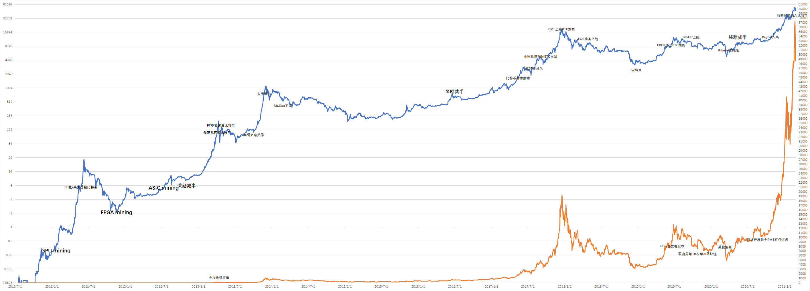
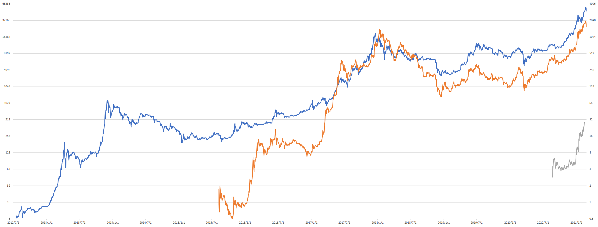

The chart of historical price of Bitcoin up to 2021/02/25,

The comparation of historical price of Bitcoin, Ether and DOT up to 2021/02/25,

Original price data are used in above two charts. A better way is using adjusted price data, click here for an illusitration.
Regulatory policy:
The blockchain articles published in JF, JFE and RFS:
- Is Bitcoin Really Untethered? JF, April 2020
- From mining to markets: The evolution of bitcoin transaction fees JFE, October 2019
- Trading and arbitrage in cryptocurrency markets JFE, February 2020
- Ransomware activity and blockchain congestion JFE, August 2021
- Optimal financing with tokens JFE
- Token-based platform finance JFE
- The Blockchain Folk Theorem RFS, May 2019
- Blockchain-Based Settlement for Asset Trading RFS, May 2019
- Blockchain Disruption and Smart Contracts RFS, May 2019
- Sex, Drugs, and Bitcoin: How Much Illegal Activity Is Financed through Cryptocurrencies? RFS, May 2019
- Initial Coin Offerings: Financing Growth with Cryptocurrency Token Sales RFS, September 2020
- Blockchain without Waste: Proof-of-Stake RFS, March 2021
- Tokenomics: Dynamic Adoption and Valuation RFS, March 2021
- Decentralized Mining in Centralized Pools RFS, March 2021
- Risks and Returns of Cryptocurrency RFS, June 2021
- Decentralizing Money: Bitcoin Prices and Blockchain Security RFS
- Consumers as Financiers: Consumer Surplus, Crowdfunding, and Initial Coin Offerings RFS
My recommended books for Bitcoin, Ethereum and blockchain technologies:
My recommended online courses for Bitcoin and blockchain technologies:
My recommended articles and videos for Bitcoin and blockchain technologies:
There are many excellent documentaries on bitcoin and blockchain in douban.com, enjoy them!
The Bitcoin timeline up to 2014 from the wonderful book Digital Gold written in 2015.
Bitcoin Pizza Day.
More stories about bitcoin.